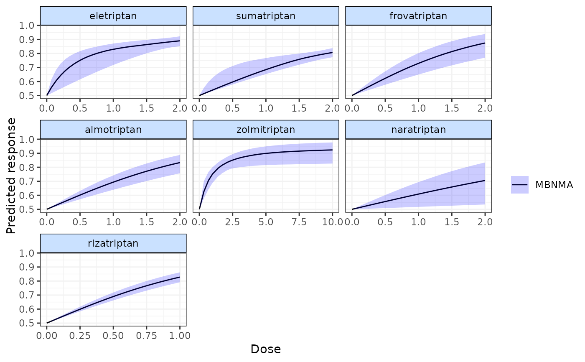
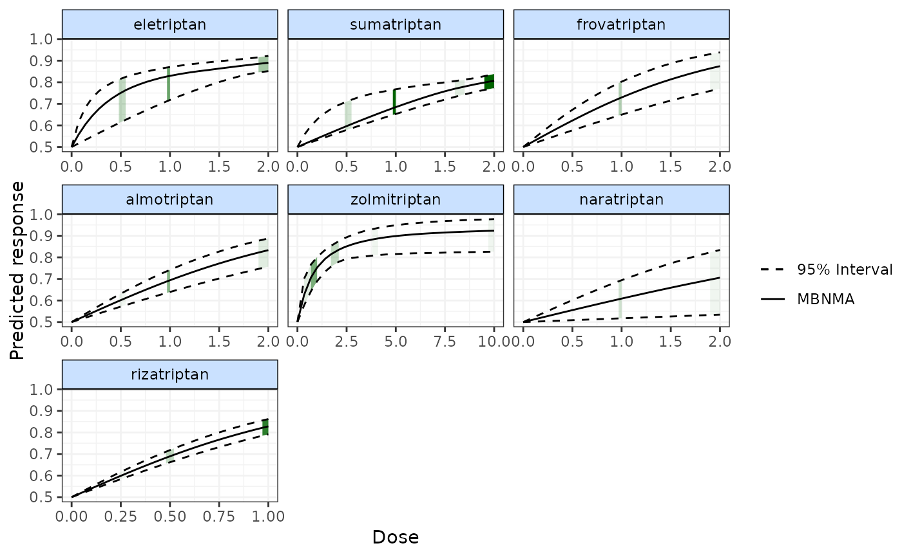
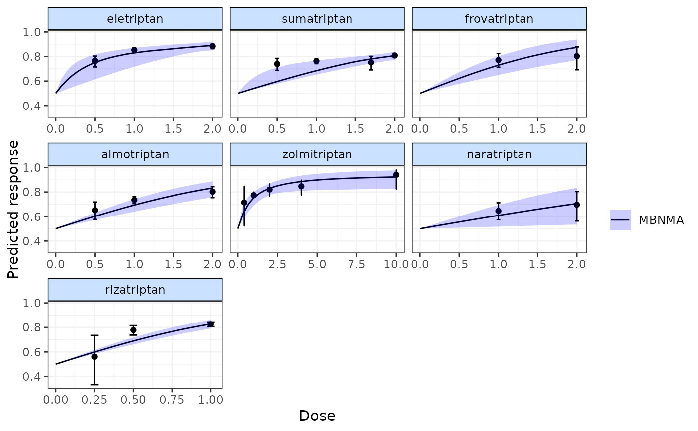
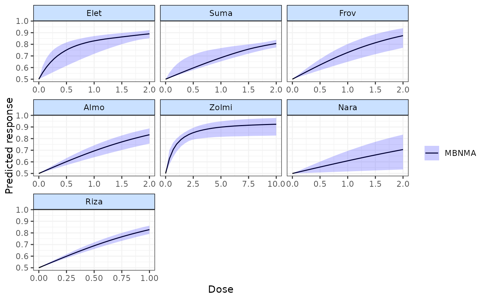
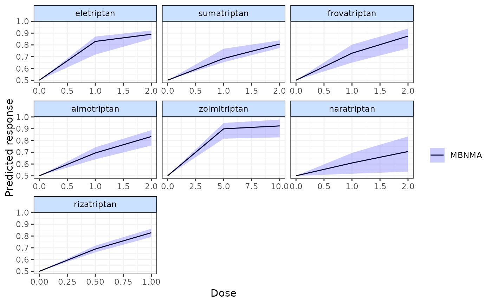

plot.mbnma.predict.RdPlots predicted responses on the natural scale from a dose-response MBNMA model.
# S3 method for mbnma.predict
plot(
x,
disp.obs = FALSE,
overlay.split = FALSE,
method = "common",
agent.labs = NULL,
scales = "free_x",
...
)An object of class "mbnma.predict" generated by
predict("mbnma")
A boolean object to indicate whether to show the location of observed doses
in the data on the 95\% credible intervals of the predicted dose-response curves as shaded regions (TRUE)
or not (FALSE). If set to TRUE the original network object used for the model
must be specified in network.
A boolean object indicating whether to overlay a line
showing the split (treatment-level) NMA results on the plot (TRUE) or not (FALSE). This will
require automatic running of a split NMA model.
For overlay.split=TRUE the original network object used for the model
must be specified in network.
Indicates the type of split (treatment-level) NMA to perform when overlay.split=TRUE. Can
take either "common" or "random".
A character vector of agent labels to display on plots. If
left as NULL (the default) the names of agents will be taken from predict. The position of
each label corresponds to each element of predict. The number of labels must equal
the number of active agents in predict. If placebo / dose=0 data is included in the predictions
then a label for placebo should not be included in agent.labs. It will not be shown
in the final plot since placebo is the point within each plot at which dose = 0 (rather
than a separate agent).
Should scales be fixed ("fixed", the default),
free ("free"), or free in one dimension ("free_x",
"free_y")?
Arguments for ggplot2
For the S3 method plot(), it is advisable to ensure predictions in
predict are estimated using a sufficient number of doses to ensure a smooth
predicted dose-response curve. If disp.obs = TRUE it is
advisable to ensure predictions in predict are estimated using an even
sequence of time points to avoid misrepresentation of shaded densities.
# \donttest{
# Using the triptans data
network <- mbnma.network(triptans)
#> Values for `agent` with dose = 0 have been recoded to `Placebo`
#> agent is being recoded to enforce sequential numbering and allow inclusion of `Placebo`
# Run an Emax dose-response MBNMA and predict responses
emax <- mbnma.run(network, fun=demax(), method="random")
#> 'ed50' parameters are on exponential scale to ensure they take positive values on the natural scale
#> `likelihood` not given by user - set to `binomial` based on data provided
#> `link` not given by user - set to `logit` based on assigned value for `likelihood`
#> Compiling model graph
#> Resolving undeclared variables
#> Allocating nodes
#> Graph information:
#> Observed stochastic nodes: 182
#> Unobserved stochastic nodes: 191
#> Total graph size: 4135
#>
#> Initializing model
#>
pred <- predict(emax, E0 = 0.5)
plot(pred)

# Display observed doses on the plot
plot(pred, disp.obs=TRUE)
#> 66 placebo arms in the dataset are not shown within the plots

# Display split NMA results on the plot
plot(pred, overlay.split=TRUE)
#> Compiling model graph
#> Resolving undeclared variables
#> Allocating nodes
#> Graph information:
#> Observed stochastic nodes: 182
#> Unobserved stochastic nodes: 92
#> Total graph size: 3437
#>
#> Initializing model
#>
#> Split NMA residual Deviance: 267.4
#>

# Split NMA results estimated using random treatment effects model
plot(pred, overlay.split=TRUE, method="random")
#> Compiling model graph
#> Resolving undeclared variables
#> Allocating nodes
#> Graph information:
#> Observed stochastic nodes: 182
#> Unobserved stochastic nodes: 205
#> Total graph size: 3980
#>
#> Initializing model
#>
#> Split NMA residual Deviance: 190.7
#> Split NMA between-study SD: 0.268 (0.175, 0.368)
#>
# Add agent labels
plot(pred, agent.labs=c("Elet", "Suma", "Frov", "Almo", "Zolmi",
"Nara", "Riza"))

# These labels will throw an error because "Placebo" is included in agent.labs when
#it will not be plotted as a separate panel
#### ERROR ####
#plot(pred, agent.labs=c("Placebo", "Elet", "Suma", "Frov", "Almo", "Zolmi",
# "Nara", "Riza"))
# If insufficient predictions are made across dose-response function
# then the plotted responses are less smooth and can be misleading
pred <- predict(emax, E0 = 0.5, n.doses=3)
plot(pred)

# }